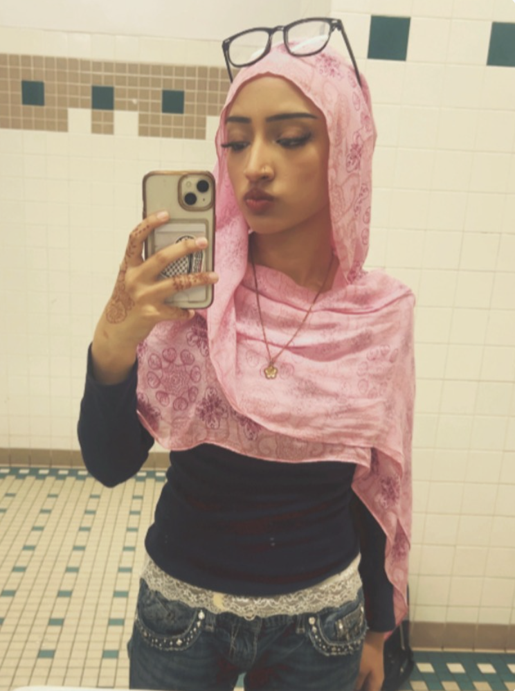

Sakina Raza (she/her)
Senior at Stuyvesant High School in New York.
Research
First author conducting environmental engineering research alongside a PhD mentor from Carnegie Mellon University. My work focuses on computational modeling and novel photothermal evaporator systems for solar-driven water purification to tackle global water scarcity.
Work & Experience
Project Management Intern with the NYC Department of Education (DIIT). Facilitated technical communication between developers and stakeholders through the SDLC for the IHMS web application.
MSA & Leadership
Vice President of Stuyvesant MSA and co-leader of the MIST team. Created the official Salaam-As-Stuy website, co-led our team to a historic 4x consecutive 1st-place regional championship, and organized community events and charity drives.
Nonprofit & Volunteering
Co-founder and Lead Web Developer of Pak Pani Wells, a registered 501(c)(3) raising $5,000+ for global water wells. Conducted endowment investment analysis with The Zahra Trust and tutored CAD through ARISTA Honor Society.
Interests
4 year Varsity Basketball athlete and 2026 MIST National Champion, as well as 3x MIST NY Champion.
I am also a very passionate advocate for sustainable engineering solutions, and I strive to use my research and experiences with robotics and advocacy to make milestones towards global water accessibility.